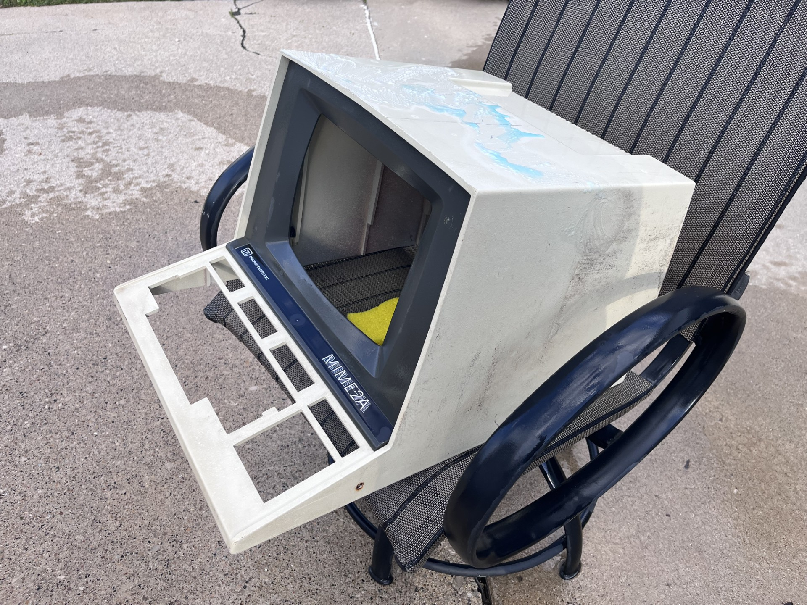
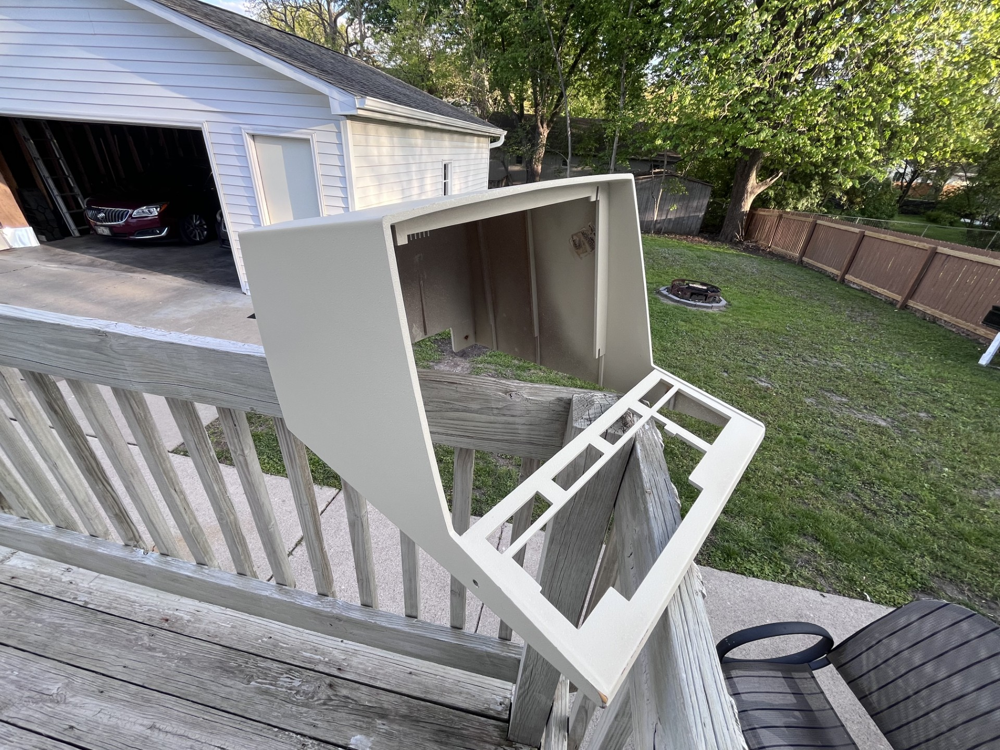
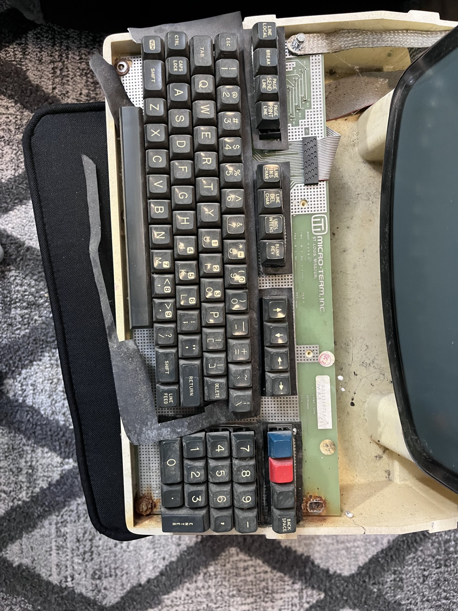
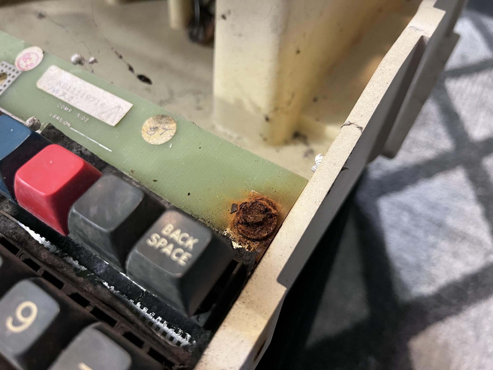
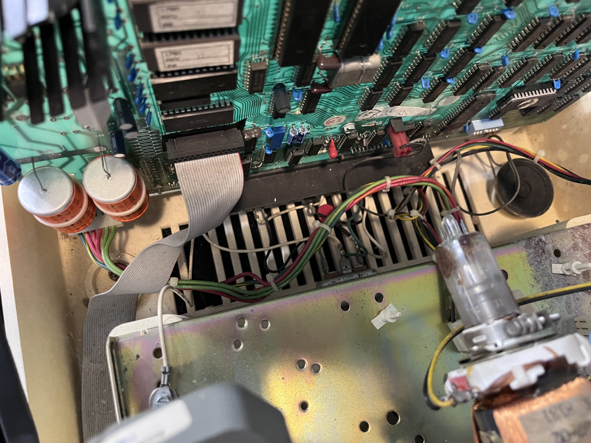

.... .. . s s s
+^""888h. ~"888h @88> :8 :8 :8
8X. ?8888X 8888f %8P u. u. .88 .88 u. u. u. .88
'888x 8888X 8888~ . u x@88k u@88c. .u :888ooo :888ooo ...ue888b x@88k u@88c. .u :888ooo
'88888 8888X "88x: .@88u us888u. ^"8888""8888" ud8888. -*8888888 -*8888888 888R Y888r ^"8888""8888" ud8888. -*8888888
`8888 8888X X88x. ''888E` .@88 "8888" 8888 888R :888'8888. 8888 8888 888R I888> 8888 888R :888'8888. 8888
`*` 8888X '88888X 888E 9888 9888 8888 888R d888 '88%" 8888 8888 888R I888> 8888 888R d888 '88%" 8888
~`...8888X "88888 888E 9888 9888 8888 888R 8888.+" 8888 8888 888R I888> 8888 888R 8888.+" 8888
x8888888X. `%8" 888E 9888 9888 8888 888R 8888L .8888Lu= .8888Lu= u8888cJ888 . 8888 888R 8888L .8888Lu=
'%"*8888888h. " 888& 9888 9888 "*88*" 8888" '8888c. .+ ^%888* ^%888* "*888*P" .@8c "*88*" 8888" '8888c. .+ ^%888*
~ 888888888!` R888" "888*""888" "" 'Y" "88888% 'Y" 'Y" 'Y" '%888" "" 'Y" "88888% 'Y"
X888^""" "" ^Y" ^Y' "YP' ^* "YP'
`88f
88
[05/08/2026]

Since the last post, I've been quite busy with school but I've been able to find some time to relax and work on these terminals again. I decided to start with surface level cleaning and was only able to get around to one of the terminals. I started cleaning the terminal casing which seemed to be painted on plastic. Unfortunately I did not get any good upclose pictures of the terminal before cleaning it, but trust me when I say the case had dirt caked into the textured plastic. After a good while scrubbing outside, I was able to make the terminal look presentable. Lots of deep gouges in the plastic make me lean towards spray painting this case blue (liek Severance).

Looks a ton better now, the left corner was worn so much the unpainted plastic was beginning to show. The brown bezel that sits flush against the CRT glass was also drying and came out really nicely.

As the plastic parts dried outside I decided to shift focus onto the keyboard and lower case. Tons of cobwebs and dead bugs were inside the terminal, and the keyboard had tons of rusty screws. I may save this keyboard as it didn't seem to be too far gone, but those screws went straight in the trash.
I think these terminals were stored in a garage, as the chasis on this one was very corroded. I'm not sure what the best course of action would be for removing this. I know this gold metal finishing can sometimes be plated in either cadmium, zinc, or Hexavalent Chromate. This plating is supposed to act as a rust preventitive measure, but I suppose it had failed. If it is Hexavalent Chromate, then I would not be able to do much of anything as this stuff is very toxic and is labeled as a carcinogenic chemical.

These screws were horrible, and I was worried that I would strip them trying to remove but thankfully they both came out. In the next post I will work on the actual electronics, though this may take a while since I still have finals. I will probably try to find the best looking unit in terms of PCB condition and try full send it to see if it just works.

The rusty screws left their mark on the PCB of the keyboard so that will be fun to remove. Vinegar should be able to get rid of that. Electrically the keyboard should work, it looks like a passive design ie. no IC's or logic (maybe that's handled on the logic board?). I've pictured the main logic board here, all the terminal's logic is housed on this board.
Overall I have my work cut out for me, and I will have to do this whole process for two other terminals. This took an hour or two and I will probably pickup this project after the semester ends. I was opening the other two terminals and noticed that they were slightly in better condition than this one, so I may be able to turn on of these terminals on and test for life. In the next update I will be posting hardware level repairs and testing, this stage of the restoration process was more so I didn't have to wash my hands everytime I used this terminal.